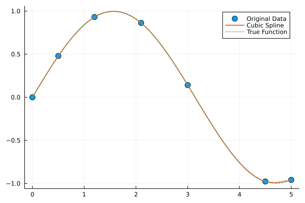
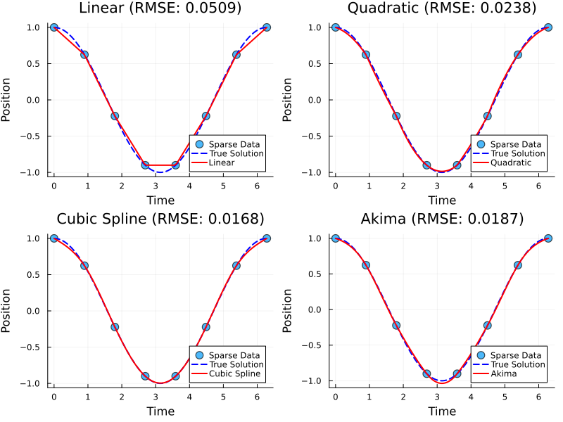
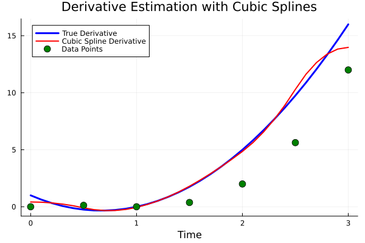
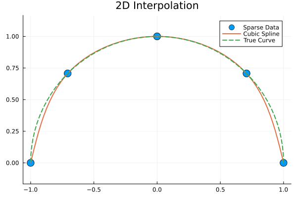
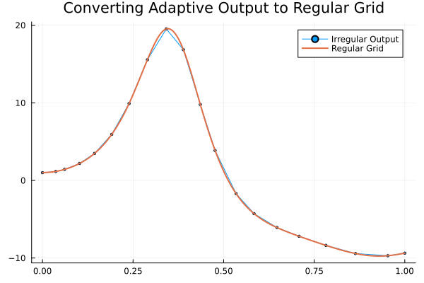

DataInterpolations.jl Integration
DataCollocations.jl seamlessly integrates with DataInterpolations.jl to provide exact interpolation methods for clean data. These methods assume minimal noise and provide exact interpolation through data points.
When to Use DataInterpolations Methods
DataInterpolations methods are ideal when:
- Clean data: Measurements have minimal noise
- Simulation data: Outputs from numerical simulations
- Sparse sampling: Few data points that need interpolation
- Exact fitting required: Need curves that pass exactly through data points
For noisy data, use the kernel smoothing methods instead.
Basic Usage
using DataCollocations, DataInterpolations
using Plots
# Clean sparse data
t_sparse = [0.0, 0.5, 1.2, 2.1, 3.0, 4.5, 5.0]
data_sparse = sin.(t_sparse) # Clean simulation data
# Define dense sampling points
t_dense = 0:0.1:5.0
# Use cubic spline interpolation
du_interp, u_interp = collocate_data(
data_sparse, t_sparse, collect(t_dense), CubicSpline
)
# Plot results
scatter(t_sparse, data_sparse, label="Original Data", ms=6)
plot!(t_dense, u_interp, label="Cubic Spline", lw=2)
plot!(t_dense, sin.(t_dense), label="True Function", lw=1, ls=:dash)
Available Interpolation Methods
Linear Methods
Simple and fast for data with linear trends:
# Linear interpolation
du, u = collocate_data(data, t_original, t_new, LinearInterpolation)Polynomial Methods
Higher-order polynomial interpolation:
# Quadratic interpolation
du, u = collocate_data(data, t_original, t_new, QuadraticInterpolation)
# Cubic spline interpolation (recommended for smooth data)
du, u = collocate_data(data, t_original, t_new, CubicSpline)Specialized Methods
# Akima interpolation (good for avoiding overshooting)
du, u = collocate_data(data, t_original, t_new, AkimaInterpolation)
# B-spline interpolation with custom parameters
du, u = collocate_data(data, t_original, t_new,
BSplineInterpolation(3, 2, :uniform, :uniform))Method Comparison
Let's compare different interpolation methods on clean simulation data:
using DataCollocations, DataInterpolations, Plots, OrdinaryDiffEq
# Generate clean simulation data (sparse sampling)
function harmonic_oscillator!(du, u, p, t)
ω = p[1]
du[1] = u[2]
du[2] = -ω^2 * u[1]
end
u0 = [1.0, 0.0]
tspan = (0.0, 2π)
prob = ODEProblem(harmonic_oscillator!, u0, tspan, [1.0])
# Sparse time points (only 8 points over full period)
t_sparse = range(0.0, 2π, length=8)
sol_sparse = solve(prob, Tsit5(), saveat=t_sparse)
data_sparse = Array(sol_sparse)
# Dense evaluation points
t_dense = range(0.0, 2π, length=100)
# Compare different interpolation methods
methods = [
("Linear", LinearInterpolation),
("Quadratic", QuadraticInterpolation),
("Cubic Spline", CubicSpline),
("Akima", AkimaInterpolation)
]
# True solution for comparison
sol_true = solve(prob, Tsit5(), saveat=t_dense)
data_true = Array(sol_true)
plots = []
for (name, method) in methods
du_interp, u_interp = collocate_data(data_sparse, t_sparse, collect(t_dense), method)
# Plot first component (position)
p = scatter(t_sparse, data_sparse[1,:], label="Sparse Data", ms=6, alpha=0.7)
plot!(p, t_dense, data_true[1,:], label="True Solution", lw=2, color=:blue, ls=:dash)
plot!(p, t_dense, u_interp[1,:], label="$name", lw=2, color=:red)
plot!(p, title="$name Interpolation", xlabel="Time", ylabel="Position")
# Calculate RMSE
rmse = sqrt(sum((u_interp[1,:] - data_true[1,:]).^2) / length(t_dense))
plot!(p, title="$name (RMSE: $(round(rmse, digits=4)))")
push!(plots, p)
end
plot(plots..., layout=(2,2), size=(800,600))
Derivative Estimation Accuracy
DataInterpolations methods provide analytical derivatives, making them highly accurate for clean data:
using DataCollocations, DataInterpolations, Plots
# Test derivative accuracy
function test_function(t)
return t^3 - 2*t^2 + t
end
function true_derivative(t)
return 3*t^2 - 4*t + 1
end
# Sparse clean data
t_test = [0.0, 0.5, 1.0, 1.5, 2.0, 2.5, 3.0]
data_test = test_function.(t_test)
# Dense evaluation
t_eval = 0:0.1:3.0
du_cubic, u_cubic = collocate_data(data_test, t_test, collect(t_eval), CubicSpline)
# Compare derivatives
true_derivs = true_derivative.(t_eval)
plot(t_eval, true_derivs, label="True Derivative", lw=3, color=:blue)
plot!(t_eval, du_cubic, label="Cubic Spline Derivative", lw=2, color=:red)
scatter!(t_test, data_test, label="Data Points", ms=6, color=:green)
plot!(title="Derivative Estimation with Cubic Splines", xlabel="Time")
Multidimensional Data
DataInterpolations methods work seamlessly with multidimensional systems:
using DataCollocations, DataInterpolations, Plots
# A 2D system example
t_2d = [0.0, π/4, π/2, 3π/4, π]
x_data = cos.(t_2d)
y_data = sin.(t_2d)
data_2d = [x_data, y_data]
data_matrix = hcat(data_2d...)'
# Interpolate to dense grid
t_dense_2d = range(0, π, length=50)
du_2d, u_2d = collocate_data(data_matrix, t_2d, collect(t_dense_2d), CubicSpline)
# Plot phase portrait
scatter(x_data, y_data, label="Sparse Data", ms=8)
plot!(u_2d[1,:], u_2d[2,:], label="Cubic Spline", lw=2)
plot!(cos.(t_dense_2d), sin.(t_dense_2d), label="True Curve", lw=2, ls=:dash)
plot!(aspect_ratio=:equal, title="2D Interpolation")
Performance Characteristics
DataInterpolations methods are highly efficient for appropriate use cases:
using BenchmarkTools
# Performance comparison on clean data
n = 50
t_bench = sort(rand(n) * 10)
data_bench = sin.(t_bench) # Clean data
t_eval_bench = 0:0.1:10
println("Performance on clean data:")
@btime collocate_data($data_bench, $t_bench, $t_eval_bench, LinearInterpolation);
@btime collocate_data($data_bench, $t_bench, $t_eval_bench, CubicSpline);
# Compare with kernel smoothing for same clean data
@btime collocate_data(reshape($data_bench, 1, :), $t_bench, EpanechnikovKernel(), 0.1);Choosing the Right DataInterpolations Method
For Most Applications: CubicSpline
- Smooth curves with continuous derivatives
- Good balance of accuracy and smoothness
- Handles moderate curvature well
For Linear Trends: LinearInterpolation
- Fastest computation
- Appropriate when data is expected to be piecewise linear
- Simple and robust
For Avoiding Overshoot: AkimaInterpolation
- Reduces oscillations near data points
- Good for data with sharp changes
- More stable than high-order polynomials
For Flexibility: BSplineInterpolation
- Controllable smoothness through degree parameter
- Can handle various boundary conditions
- Good for complex curve shapes
Example: Processing Simulation Output
A common use case is processing output from numerical simulations:
using DataCollocations, DataInterpolations, Plots, OrdinaryDiffEq
# Simulate solving an ODE with adaptive time stepping
function lorenz!(du, u, p, t)
σ, ρ, β = p
du[1] = σ * (u[2] - u[1])
du[2] = u[1] * (ρ - u[3]) - u[2]
du[3] = u[1] * u[2] - β * u[3]
end
u0 = [1.0, 1.0, 1.0]
p = [10.0, 28.0, 8/3]
tspan = (0.0, 1.0)
prob = ODEProblem(lorenz!, u0, tspan, p)
# Solve with adaptive time stepping (irregular output)
sol = solve(prob, Tsit5())
t_irregular = sol.t
data_irregular = Array(sol)
# Convert to regular grid using cubic splines
t_regular = range(0.0, 1.0, length=200)
du_regular, u_regular = collocate_data(data_irregular, t_irregular,
collect(t_regular), CubicSpline)
# Plot comparison
plot(t_irregular, data_irregular[1,:], label="Irregular Output",
marker=:circle, ms=2, lw=1)
plot!(t_regular, u_regular[1,:], label="Regular Grid", lw=2)
plot!(title="Converting Adaptive Output to Regular Grid")
Error Handling
DataInterpolations methods may fail on problematic data:
using DataCollocations, DataInterpolations
# Handle potential interpolation failures
function safe_interpolate(data, t_data, t_eval, method)
try
return collocate_data(data, t_data, t_eval, method)
catch e
@warn "Interpolation with $method failed: $e"
@info "Falling back to linear interpolation"
return collocate_data(data, t_data, t_eval, LinearInterpolation)
end
end
# Example with problematic data (duplicate time points)
t_bad = [0.0, 1.0, 1.0, 2.0] # Duplicate at t=1.0
data_bad = [1.0, 2.0, 2.1, 3.0]
t_eval = 0:0.1:2.0
du_safe, u_safe = safe_interpolate(data_bad, t_bad, t_eval, CubicSpline)([1.0, 1.0, 1.0, 1.0, 1.0, 1.0, 1.0, 1.0, 1.0, 1.0 … 0.8999999999999999, 0.8999999999999999, 0.8999999999999999, 0.8999999999999999, 0.8999999999999999, 0.8999999999999999, 0.8999999999999999, 0.8999999999999999, 0.8999999999999999, 0.8999999999999999], [1.0, 1.1, 1.2, 1.3, 1.4, 1.5, 1.6, 1.7, 1.8, 1.9 … 2.19, 2.2800000000000002, 2.37, 2.46, 2.55, 2.64, 2.73, 2.8200000000000003, 2.91, 3.0])Integration with Kernel Methods
You can combine both approaches in your workflow:
# Step 1: Use DataInterpolations for initial processing of clean sparse data
du_clean, u_clean = collocate_data(clean_sparse_data, t_sparse, t_intermediate, CubicSpline)
# Step 2: Add noise simulation
noisy_data = u_clean + noise_level * randn(size(u_clean))
# Step 3: Use kernel smoothing to handle the noise
du_final, u_final = collocate_data(noisy_data, t_intermediate, EpanechnikovKernel())This page demonstrates how DataCollocations.jl's DataInterpolations integration provides exact, efficient interpolation for clean data scenarios, complementing the kernel smoothing methods for noisy data.